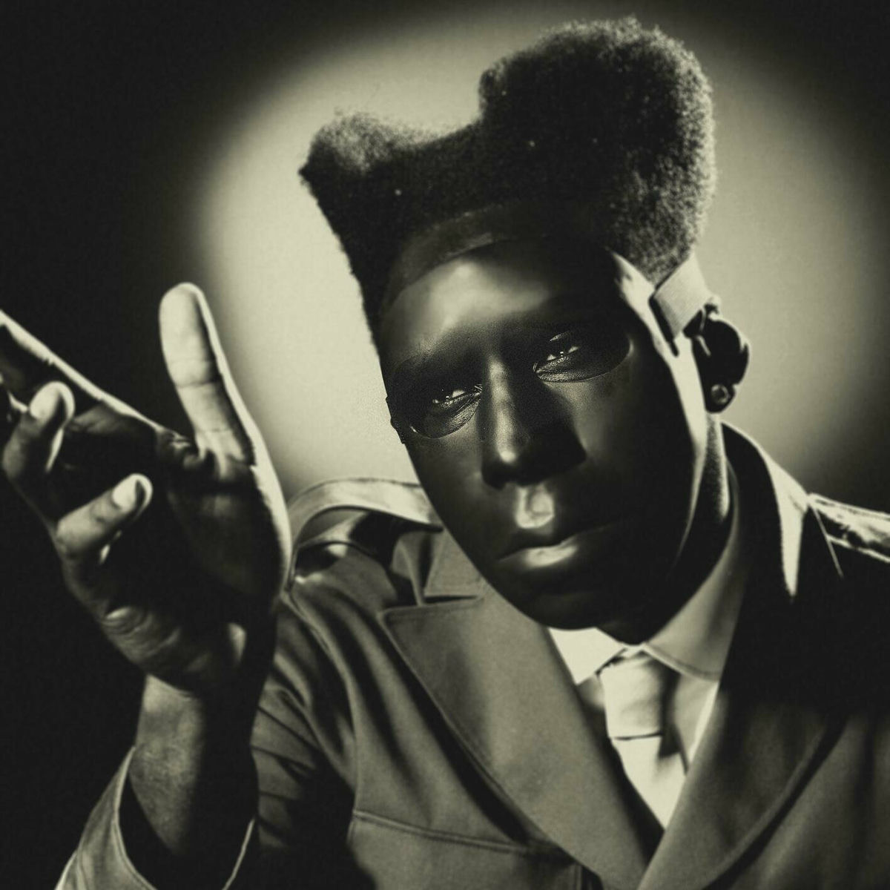
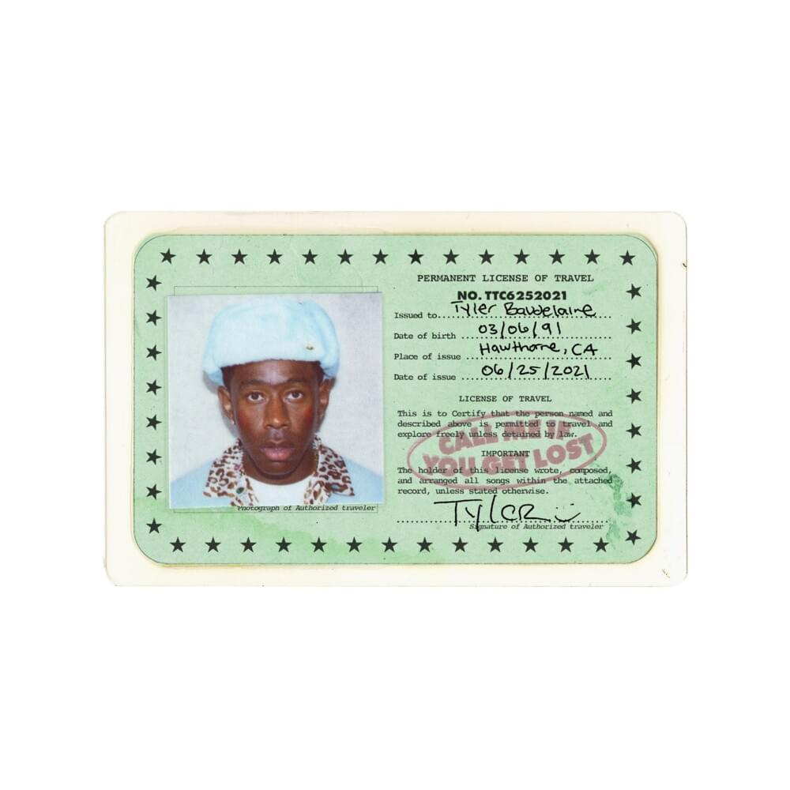
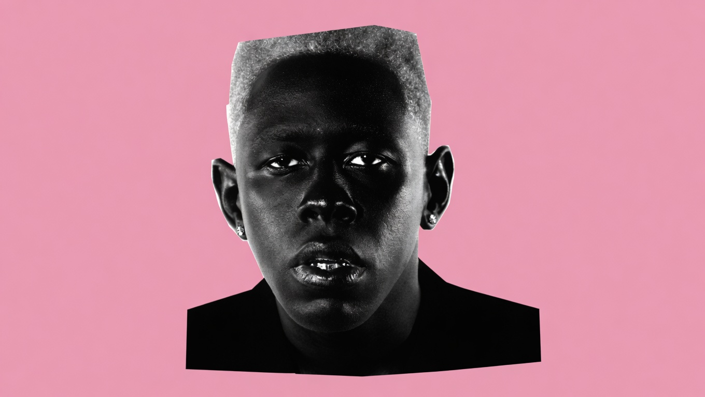
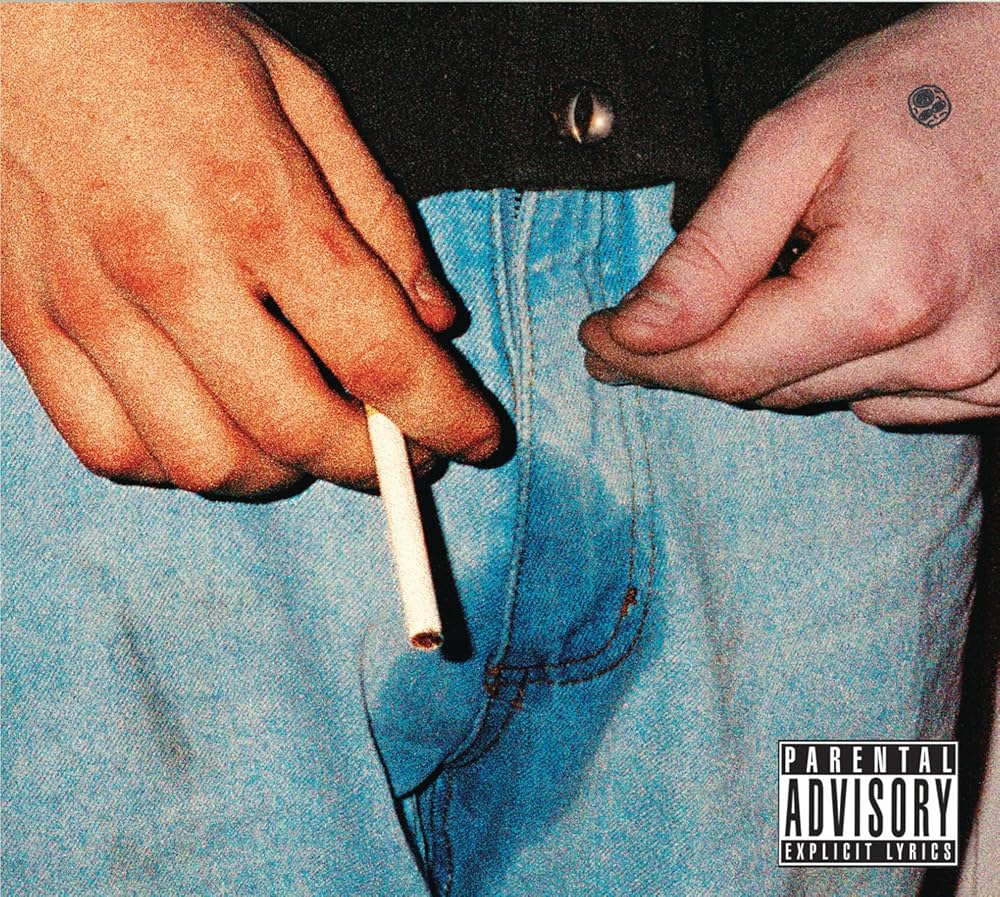
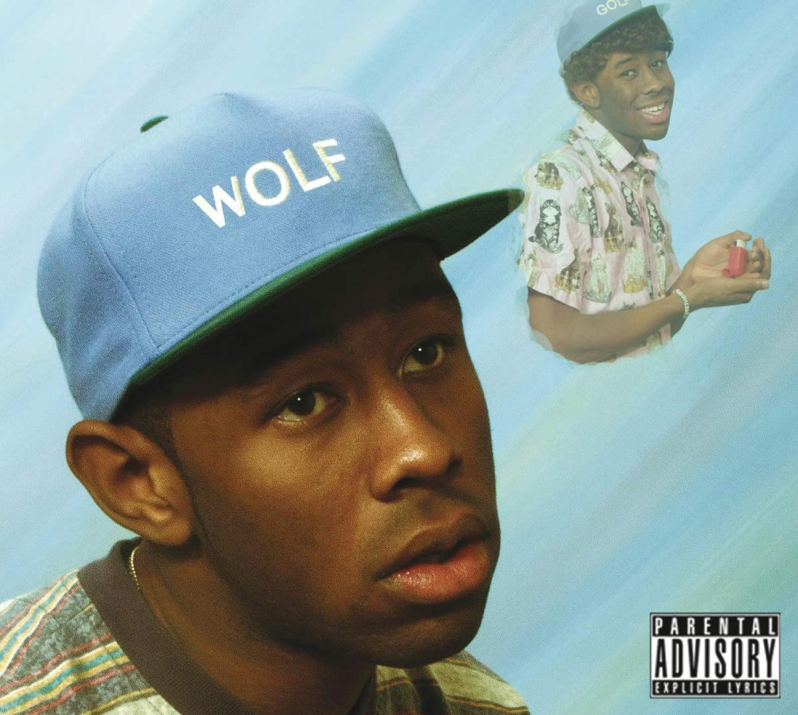

Tyler Gregory Okonma, mais conhecido como Tyler, The Creator, é um dos artistas mais influentes e multifacetados da música contemporânea. Nascido em 1991 em Hawthorne, Califórnia, ele surgiu no cenário musical no final dos anos 2000 como o líder e cofundador do coletivo de hip-hop alternativo Odd Future (OFWGKTA). No início de sua carreira, Tyler chamou a atenção por sua estética crua, videoclipes chocantes e letras controversas em mixtapes e álbuns como Bastard (2009) e Goblin (2011). Essa fase inicial era marcada por uma sonoridade agressiva, batidas obscuras feitas por ele mesmo e uma rebeldia que rapidamente atraiu uma base de fãs jovem e extremamente leal. No entanto, a verdadeira marca de Tyler como artista tem sido a sua constante evolução. Ao longo dos anos, ele transitou do rap underground e agressivo para uma sonoridade rica, complexa e altamente melódica, incorporando elementos de jazz, soul, R&B e pop.